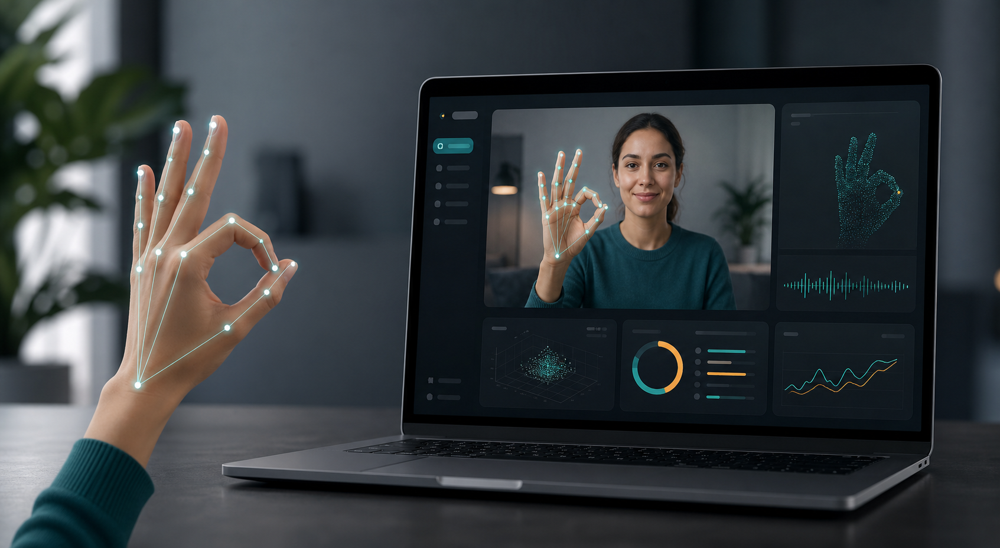

Camera feed
Recognition Workspace
Idle
Checking API
Webcam preview
Press Start Recognition to launch a recognition session.AI-powered assistive technology
A computer vision system that recognizes hand gestures in real time and converts them into readable text and speech using deep learning.

Live recognition
The interface captures browser webcam frames and sends them to the Flask recognition API for TensorFlow and MediaPipe processing.
Camera feed
Webcam preview
Press Start Recognition to launch a recognition session.Speech output
Recognized gestures are assembled into a sentence and can be spoken with the browser speech engine or forwarded to a backend text-to-speech endpoint.
Project information
Features
Processes webcam frames continuously for live hand gesture interpretation.
Converts recognized gesture classes into readable labels and sentence fragments.
Prepared for speech playback through browser APIs or a backend TTS service.
Designed around a trained CNN model using TensorFlow/Keras.
Dashboard-focused controls and results designed for final-year project evaluation.
Statistics dashboard
Recognition history
| Time | Gesture | Text | Confidence |
|---|---|---|---|
| No recognition events yet. | |||